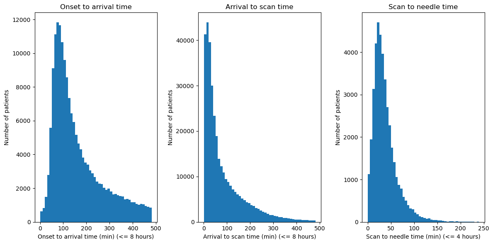

Stroke pathway timing distributions#
Aim#
Visualises distribution of timings for:
(Known) Onset to arrival time
Arrival to scan time
Scan to needle time
Finds the best distributions to fit the above.
Replicates SAMueL-1 analyses available here
Set up#
# Import packages and functions
from dataclasses import dataclass
import matplotlib.pyplot as plt
import numpy as np
import os
import pandas as pd
from sklearn.preprocessing import StandardScaler
import scipy.stats
# Hide warnings (to hide runtime error)
import warnings
warnings.filterwarnings("ignore")
# Set max rows when display dataframe
pd.set_option('display.max_rows', 100)
# Linting
%load_ext pycodestyle_magic
%pycodestyle_on
# Set paths and filenames
@dataclass(frozen=True)
class Paths:
'''Singleton object for storing paths to data and files.'''
data_path = './../output/'
data_filename = 'reformatted_data.csv'
admission_only_filename = 'reformatted_data_admissions_only.csv'
paths = Paths()
# Load data
data_full = pd.read_csv(os.path.join(paths.data_path,
paths.admission_only_filename))
Plot distributions#
def plot_dist(times, binwidth, ax, title, details):
'''
Plots distribution of the provided series
times = series
binwidth = integer, width of bins for histogram
ax = axes object to plot histogram on
title = string, title for plot and xlabel
details = string, extra details to add for xlabel
'''
ax.hist(times,
bins=np.arange(min(times),
max(times) + binwidth,
binwidth),
rwidth=1)
ax.set_title(title)
ax.set_xlabel(title + ' ' + details)
ax.set_ylabel('Number of patients')
fig, ax = plt.subplots(1, 3, figsize=(12, 6))
# Onset to arrival time (within 8 hours)
plot_dist(times=data_full.loc[data_full['onset_to_arrival_time'] <= 480,
'onset_to_arrival_time'],
binwidth=10,
ax=ax[0],
title='Onset to arrival time',
details='(min) (<= 8 hours)')
# Arrival to scan time (within 8 hours)
plot_dist(times=data_full.loc[data_full['arrival_to_scan_time'] <= 480,
'arrival_to_scan_time'],
binwidth=10,
ax=ax[1],
title='Arrival to scan time',
details='(min) (<= 8 hours)')
# Scan to needle time (within 4 hours)
plot_dist(times=data_full.loc[data_full['scan_to_thrombolysis_time'] <= 240,
'scan_to_thrombolysis_time'],
binwidth=5,
ax=ax[2],
title='Scan to needle time',
details='(min) (<= 4 hours)')
plt.tight_layout()
plt.show()

Fit distributions#
Fit distributions to bootstrapped sample of 10,000 patients
def fit_distribution(data_to_fit, samples=10000):
'''
Investigate fit of ten different distributions
Parameters:
data_to_fit - Series with data to fit
samples - Number of times to sample with replacement (default 10000)
Returns:
y_std - Array with 10,000 items, which are the bootstrapped times
'''
# Convert to array and remove invalid values
# (which shouldn't exist - but just in case!)
yy = data_to_fit[(data_to_fit > 0) & (data_to_fit < np.inf)].values
# Bootstrap sample - generate random sample of 10,000
# patients from array. Replace=True, meaning the same
# value of yy can be sampled multiple times, as a
# bootstrap sample is when you draw randomly with replacement
yy = np.random.choice(a=yy, size=samples, replace=True)
# Reshape from 1D array (10000,) to 2D array with 10,000 rows (10000, 1),
# so can then standardise the data (mean 0, SD 1)
yy = yy.reshape(-1, 1)
y_std = StandardScaler().fit_transform(yy)
# Add +/- 0.0001 Std Dev jitter to avoid failure of fit for discrete data
# Sample between -0.0001 and 0.0001, and add those values to yy
jitter = np.random.uniform(low=-0.0001, high=0.0001, size=samples)
y_std += jitter.reshape(-1, 1)
# Test 10 distributions
dist_names = ['beta', 'expon', 'gamma', 'lognorm', 'norm',
'pearson3', 'triang', 'uniform',
'weibull_min', 'weibull_max']
# Create empty lists to store results
chi_square = []
p_values = []
# Set up 50 bins for chi-squared test. Observed data will be approximately
# normally distributed across all bins
# Linspace returns evently spaced numbers over specified interval
# i.e. [0, 2, 4, 6...]
bins = np.linspace(start=0, stop=100, num=51)
# Calculate the qth percentile of the data (i.e. 0th, 2nd, 4th, 6th, ...)
cutoffs = np.percentile(y_std, bins)
# Find observed frequency in each bin (should be 200), then use that to
# create array with cumulative frequency
observed_freq = np.histogram(y_std, bins=cutoffs)[0]
cum_observed_freq = np.cumsum(observed_freq)
# Convert values into 1D array
y_std = y_std.flatten()
# Loop through the candidate distributions
for distribution in dist_names:
# Use string to get relevant distribution object and fit it,
# returning fitted distribution parameters
dist = getattr(scipy.stats, distribution)
param = dist.fit(y_std)
# Perform Kolmogorov-Smirnov test for goodness of fit and
# extract p-value. Round to 5 d.p. and save to list
p = scipy.stats.kstest(y_std, distribution, args=param).pvalue
p_values.append(np.round(p, 5))
# Get expected counts in percentile bins for that distribution
# Further details:
# Find expected counts using the CDF (cumulative distribution function)
# CDF describes probably distribution of random variable.
# It calculates the probability
# of an observation equal or less than a value.
# Param has the maximum likelihood estimates of the shape parameters,
# location, and (if applicable) scale of the distribution. The
# starred expression is to treat each as seperate positional arguments
cdf_fitted = dist.cdf(cutoffs, *param[:-2],
loc=param[-2], scale=param[-1])
expected_freq = []
for bin in range(len(bins)-1):
expected_cdf_area = cdf_fitted[bin+1] - cdf_fitted[bin]
expected_freq.append(expected_cdf_area)
# Calculate chi-squared
# Find expected counts for each bin by multiplying by number of samples
# Create array with those as cumulative counts
expected_freq = np.array(expected_freq) * samples
cum_expected_freq = np.cumsum(expected_freq)
ss = sum(((cum_expected_freq - cum_observed_freq) ** 2) /
cum_observed_freq)
chi_square.append(ss)
# Collate results and sort by goodness of fit
results = pd.DataFrame({
'distribution': dist_names,
'chi_square': chi_square,
'p_value': p_values})
results.sort_values(['chi_square'], inplace=True)
display(f'Distributions sorted by goodness of fit:')
display(results)
# Get name of the best distribution
best = results.reset_index().distribution[0]
return best, y_std
def plot_chosen_distribution(best, y_std):
'''
Creates plots for chosen distribution - histogram of standardised
values with the chosen distribution overlaid, and a P-P plot
Inputs:
best - string, best distribution from fit_distribution()
y_std - array, contains bootstrapped times from fit_distribution()
'''
fig, ax = plt.subplots(1, 2, figsize=(10, 5))
# Create histogram of standardised values
h = ax[0].hist(y_std, bins=100, color='grey', alpha=0.5)
ax[0].set_xlabel('Standardised value')
ax[0].set_ylabel('Frequency')
ax[0].set_title('Histogram of standardised bootstrapped values')
# Add line for distribution that fit best
# Get X values from histogram
x = h[1]
# Set up distribution and store distribution parameters
dist = getattr(scipy.stats, best)
param = dist.fit(y_std)
# Get line for distribution
# Param has the maximum likelihood estimates of the shape parameters,
# location, and (if applicable) scale of the distribution. The
# starred expression is to treat each as seperate positional arguments
pdf_fitted = dist.pdf(x, *param[:-2], loc=param[-2], scale=param[-1])
# Trapz is used to scale to match the observed data
scale_pdf = np.trapz(h[0], h[1][:-1]) / np.trapz(pdf_fitted, x)
pdf_fitted *= scale_pdf
# Add line to the plot
ax[0].plot(x, pdf_fitted, label=best, alpha=1)
ax[0].legend()
# Plot observed and theoretical cumulative distribution (P-P plot)
# Get size
size = len(y_std)
# Get 10,000 random numbers from distribution
norm = dist.rvs(*param[0:-2], loc=param[-2], scale=param[-1], size=size)
norm.sort()
# Calculate cumulative distributions
bins = np.percentile(norm, range(0, 101))
y_std_counts, bins = np.histogram(y_std, bins)
norm_counts, bins = np.histogram(norm, bins)
cum_y_std = np.cumsum(y_std_counts)
cum_norm = np.cumsum(norm_counts)
cum_y_std = cum_y_std / max(cum_y_std)
cum_norm = cum_norm / max(cum_norm)
# Plot observed and theoretical distributions
ax[1].plot(cum_norm, cum_y_std, 'o', label=best, alpha=0.5)
ax[1].set_title('P-P plot')
ax[1].set_xlabel('Theoretical cumulative distribution')
ax[1].set_ylabel('Observed cumulative distribution')
ax[1].legend()
# Add diagonal line
ax[1].plot([0, 1], [0, 1], 'r--')
# Display plot
plt.tight_layout(pad=2)
plt.show()
# Onset to arrival time (restrict to 8 hours)
data_to_fit = data_full.loc[
data_full['onset_to_arrival_time'] <= 480,
'onset_to_arrival_time']
# Check fit of distributions
best, y_std = fit_distribution(data_to_fit)
# Plot best fitting distribution
plot_chosen_distribution(best, y_std)
'Distributions sorted by goodness of fit:'
| distribution | chi_square | p_value | |
|---|---|---|---|
| 3 | lognorm | 1091.614396 | 0.0 |
| 5 | pearson3 | 2781.193833 | 0.0 |
| 2 | gamma | 2781.366636 | 0.0 |
| 9 | weibull_max | 3991.770271 | 0.0 |
| 8 | weibull_min | 5437.970539 | 0.0 |
| 6 | triang | 8831.063820 | 0.0 |
| 4 | norm | 18047.029775 | 0.0 |
| 7 | uniform | 37197.695295 | 0.0 |
| 1 | expon | 55580.946570 | 0.0 |
| 0 | beta | 68212.610808 | 0.0 |
# Arrival to scan time (restrict to 8 hours)
data_to_fit = data_full.loc[
data_full['arrival_to_scan_time'] <= 480,
'arrival_to_scan_time']
# Check fit of distributions
best, y_std = fit_distribution(data_to_fit)
# Plot best fitting distribution
plot_chosen_distribution(best, y_std)
'Distributions sorted by goodness of fit:'
| distribution | chi_square | p_value | |
|---|---|---|---|
| 3 | lognorm | 1052.788700 | 0.0 |
| 1 | expon | 2178.104366 | 0.0 |
| 8 | weibull_min | 2641.993796 | 0.0 |
| 2 | gamma | 3888.416239 | 0.0 |
| 5 | pearson3 | 4164.647312 | 0.0 |
| 0 | beta | 5072.607026 | 0.0 |
| 9 | weibull_max | 25820.091470 | 0.0 |
| 6 | triang | 59501.809783 | 0.0 |
| 4 | norm | 59988.984473 | 0.0 |
| 7 | uniform | 116806.616792 | 0.0 |
# Scan to needle time (restrict to 4 hours)
data_to_fit = data_full.loc[
data_full['scan_to_thrombolysis_time'] <= 240,
'scan_to_thrombolysis_time']
# Check fit of distributions
best, y_std = fit_distribution(data_to_fit)
# Plot best fitting distribution
plot_chosen_distribution(best, y_std)
'Distributions sorted by goodness of fit:'
| distribution | chi_square | p_value | |
|---|---|---|---|
| 3 | lognorm | 116.947350 | 0.00075 |
| 0 | beta | 248.754473 | 0.00000 |
| 5 | pearson3 | 287.679872 | 0.00000 |
| 2 | gamma | 287.732886 | 0.00000 |
| 8 | weibull_min | 1188.838052 | 0.00000 |
| 9 | weibull_max | 1794.459494 | 0.00000 |
| 4 | norm | 15925.164511 | 0.00000 |
| 1 | expon | 29065.219702 | 0.00000 |
| 6 | triang | 81439.629614 | 0.00000 |
| 7 | uniform | 118671.296495 | 0.00000 |
Observations#
All timings have a right skew, with lognormal having minimum chi-squared
No distribution was a perfect fit for the data (all had p<0.01)
Choose log normal distributions for pathway process times